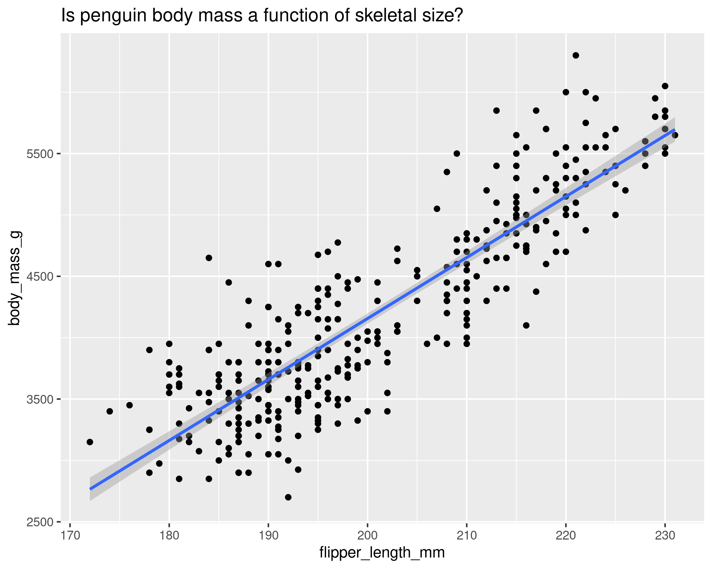
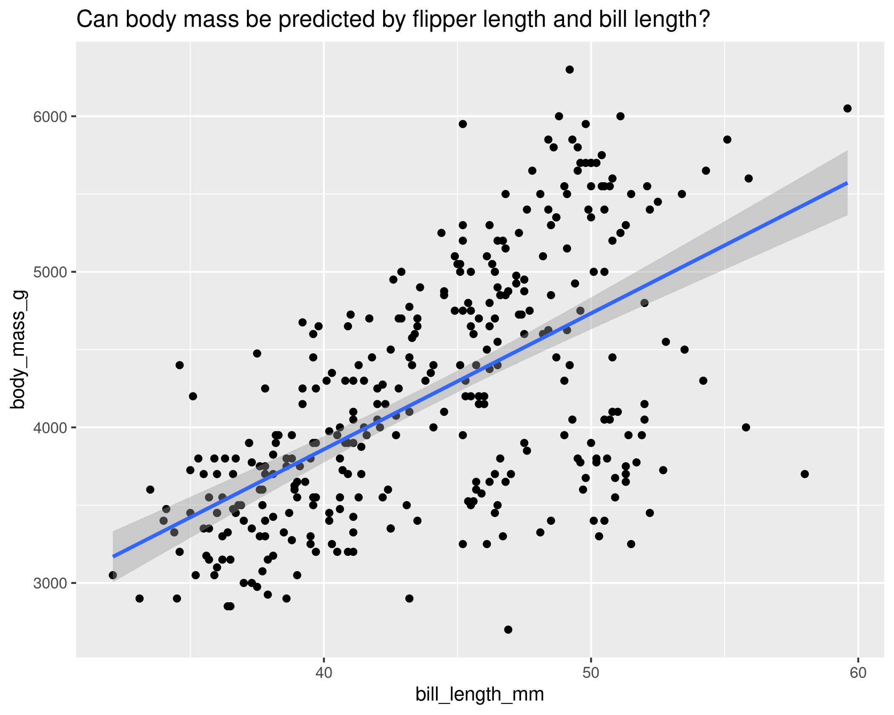
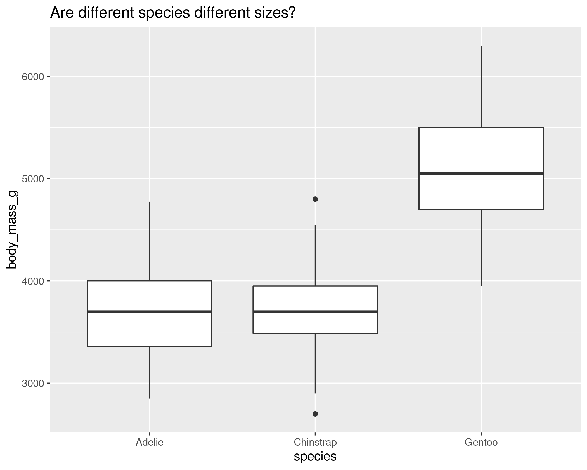
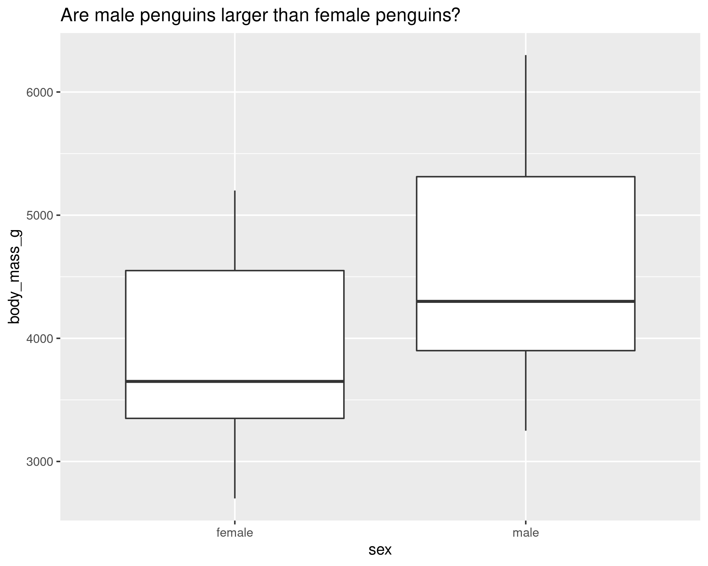

4 Linear Models
4.1 Preamble
library(tidyverse)
library(palmerpenguins)
library(patchwork) # putting figures together
library(car) # For Anova() and vif() functionsHere we’re talking about linear relationships. There are plenty of other types of models (e.g., exponential) which deal with non-linear relationships or a mix of linear and non-linear (e.g., GAMs).
Disclaimer:
The models included here are examples, they’re not the best (or most sensible) questions to ask, and often explore correlated features rather than features that we might actually assume causation.
Technically these might be better explored using Standardised Major Axis Estimate (SMA) in the smatr package. But for now, the’ll suffice 😁
4.2 General Workflow
- Decide on your question(s)
- Preliminary data exploration
- Decide on a model (linear model, generalized linear model, mixed model, etc.)
- Run model
- Check model diagnostics
- Interpret model
4.3 (Simple) LMs in R
Requirements
-
Continuous response (
y)- no count data, no binary (binomial) data, no proprotions (although could be transformed)
-
Continuous or categorical predictors (
x1,x2, etc.)
Assumptions
-
Linear relationship between
yandxs. -
Independence - Observations are independent (i.e. residuals are independent)
- no hierarchical sampling, no nested designs, variables are based on each other
- Normality - Residuals are normally distributed
- Constant variance - There is constant variance in residuals (no heteroscedasticity)
Types of models
-
Regression - Continuous predictor (
x) -
Multiple regression - More than one continuous predictor
(
x1,x2, …) -
ANOVA - Categorical predictor(s) (
x1,x2, …) -
ANCOVA - Mix of categorical and continuous predictors (
x1,x2, …)
Run models with lm()
R will figure out the underlying model type (regression, ANOVA, ANCOVA etc.)
Store your model as an object, here m
m <- lm(body_mass_g ~ bill_depth_mm, data = penguins)m is a model object
class(m)## [1] "lm"This contains all the information about the model
Use summary() to show summary table:
summary(m)##
## Call:
## lm(formula = body_mass_g ~ bill_depth_mm, data = penguins)
##
## Residuals:
## Min 1Q Median 3Q Max
## -1607.38 -510.10 -66.96 462.43 1819.28
##
## Coefficients:
## Estimate Std. Error t value Pr(>|t|)
## (Intercept) 7488.65 335.22 22.34 <2e-16 ***
## bill_depth_mm -191.64 19.42 -9.87 <2e-16 ***
## ---
## Signif. codes: 0 '***' 0.001 '**' 0.01 '*' 0.05 '.' 0.1 ' ' 1
##
## Residual standard error: 708.1 on 340 degrees of freedom
## (2 observations deleted due to missingness)
## Multiple R-squared: 0.2227, Adjusted R-squared: 0.2204
## F-statistic: 97.41 on 1 and 340 DF, p-value: < 2.2e-16Use anova() to show Anova table (Type I), or, better, Anova() (from the car package) to use type II or III:
Anova(m, type = "III")## Anova Table (Type III tests)
##
## Response: body_mass_g
## Sum Sq Df F value Pr(>F)
## (Intercept) 250215572 1 499.060 < 2.2e-16 ***
## bill_depth_mm 48840779 1 97.414 < 2.2e-16 ***
## Residuals 170466918 340
## ---
## Signif. codes: 0 '***' 0.001 '**' 0.01 '*' 0.05 '.' 0.1 ' ' 1Summary tables vs. ANOVA tables
NOTE
Even though traditionally a summary table is used to evaluate a regression and an ANOVA table is used to evaluate an ANOVA or an ANCOVA, they can both be used to assess any linear model, they just ask slightly different questions
Summary tables
Summary tables show the results of very specific statistical questions. The precise interpretation of these results depends on whether the parameters are continuous, categorical, or a mix, and whether there are interactions or not. (see specific sections for interpretations).
ANOVA tables
Broadly, an ANOVA table asks whether there is an overall effect of any parameter, but it does not specify what that effect is.
This means that for continuous parameters you don’t know if the effect is positive or negative.
For categorical parameters you don’t know which category has what effect (but see Post-Hoc analyses which can be used to tease this apart).
4.4 Regressions
- Continuous response (
y) and continuous predictor(s) (x) - What might we be interested in?

Create Model
To see if these relationships are significant we run/create a linear model…
m <- lm(body_mass_g ~ flipper_length_mm + bill_length_mm, data = penguins)Wait! We shouldn’t interpret until we’ve checked our diagnostics
Model Diagnostics
- Checking Assumptions
- Normality (of residuals)
- Constant Variance (no heteroscedasticity)
- Other cautions
- Influential observations (Cook’s D)
- Multiple collinearity (with more than one
xor explanatory variables)
See Diagnostics section for more details
d <- data.frame(residuals = residuals(m),
std_residuals = rstudent(m),
fitted = fitted(m),
cooks = cooks.distance(m)) %>%
mutate(obs = 1:n())Normality and Heteroscedasticity
g1 <- ggplot(data = d, aes(x = std_residuals)) +
geom_histogram(bins = 20) +
ggtitle("Histogram of residuals")
g2 <- ggplot(data = d, aes(sample = std_residuals)) +
stat_qq() +
stat_qq_line() +
ggtitle("QQ Normality plot of residuals")
g3 <- ggplot(d, aes(x = fitted, y = std_residuals)) +
geom_point() +
geom_hline(yintercept = 0) +
ggtitle("Heteroscedacity: Residuals vs. fitted")
(g1 + g2) / g3Influence
Cook’s D
ggplot(d, aes(x = obs, y = cooks)) +
geom_point() +
geom_hline(yintercept = 1, linetype = "dotted") +
geom_hline(yintercept = 4/nrow(penguins),
linetype = "dashed") +
ggtitle("Cook's D: Influential observations")Pretty good!
Multicollinearity (collinearity)
Look at our two explanatory variables
ggplot(data = penguins, aes(x = flipper_length_mm, y = bill_length_mm)) +
geom_point() +
stat_smooth(method = "lm")Definitely correlated. We need to investigate if it interferes with the model.
Use vif() function from car package1
## flipper_length_mm bill_length_mm
## 1.756154 1.756154Hmm, that’s pretty good (looking for < 10).
So we can assume that the correlation is not a problem for how we interpret the model
Summary Tables
##
## Call:
## lm(formula = body_mass_g ~ flipper_length_mm + bill_length_mm,
## data = penguins)
##
## Residuals:
## Min 1Q Median 3Q Max
## -1090.5 -285.7 -32.1 244.2 1287.5
##
## Coefficients:
## Estimate Std. Error t value Pr(>|t|)
## (Intercept) -5736.897 307.959 -18.629 <2e-16 ***
## flipper_length_mm 48.145 2.011 23.939 <2e-16 ***
## bill_length_mm 6.047 5.180 1.168 0.244
## ---
## Signif. codes: 0 '***' 0.001 '**' 0.01 '*' 0.05 '.' 0.1 ' ' 1
##
## Residual standard error: 394.1 on 339 degrees of freedom
## (2 observations deleted due to missingness)
## Multiple R-squared: 0.76, Adjusted R-squared: 0.7585
## F-statistic: 536.6 on 2 and 339 DF, p-value: < 2.2e-16That’s a lot of information! Let’s break it down.
Model
## Call:
## lm(formula = body_mass_g ~ flipper_length_mm + bill_length_mm,
## data = penguins)Missing observations
## (2 observations deleted due to missingness)R2 and adjusted R2
- Adjusted for the number of parameters
## Multiple R-squared: 0.76, Adjusted R-squared: 0.7585 Effects
## Estimate Std. Error t value Pr(>|t|)
## (Intercept) -5736.897 307.959 -18.629 <2e-16 ***
## flipper_length_mm 48.145 2.011 23.939 <2e-16 ***
## bill_length_mm 6.047 5.180 1.168 0.244 Interpreting effects
## Estimate Std. Error t value Pr(>|t|)
## (Intercept) -5736.897 307.959 -18.629 <2e-16 ***
## flipper_length_mm 48.145 2.011 23.939 <2e-16 ***
## bill_length_mm 6.047 5.180 1.168 0.244 -
Intercept
- Significant (P = < 2.2e-16)
- Penguins with a flipper length of 0 mm and a bill length of 0 mm are predicted to have a body mass of -5736.9 g
-
Flipper Length
- Significant (P = < 2.2e-16)
- For each 1 mm increase in flipper length, body mass is predicted to increase by 48.14 g
-
Bill Length
- Non-significant (P = 0.244)
- So we don’t interpret)
(Note: 2e-16 = 0.0000000000000002, R uses this as the smallest number)
Therefore
There is a significant relationship between flipper length and body mass.
But not between bill length and body mass (when including and controlling for flipper length)
Interpreting the effects as a model
First we have the general equation for a line4.
\(y = mx + b\)
- \(m\) = slope of \(x\)
- \(b\) = intercept
For two explanatory variables
\(y = m_1x_1 + m_2x_2 + b\)
For our specific model
\(y = 48.14x_1 + 6.05x_2 + (-5736.9)\)
Extra
Why no effect of Bill Length? {-}
##
## Call:
## lm(formula = body_mass_g ~ bill_length_mm, data = penguins)
##
## Residuals:
## Min 1Q Median 3Q Max
## -1762.08 -446.98 32.59 462.31 1636.86
##
## Coefficients:
## Estimate Std. Error t value Pr(>|t|)
## (Intercept) 362.307 283.345 1.279 0.202
## bill_length_mm 87.415 6.402 13.654 <2e-16 ***
## ---
## Signif. codes: 0 '***' 0.001 '**' 0.01 '*' 0.05 '.' 0.1 ' ' 1
##
## Residual standard error: 645.4 on 340 degrees of freedom
## (2 observations deleted due to missingness)
## Multiple R-squared: 0.3542, Adjusted R-squared: 0.3523
## F-statistic: 186.4 on 1 and 340 DF, p-value: < 2.2e-16- Our hypothesis is of causation but really, this is just correlation
- Flipper length is the ‘better’ predictor of body mass
- When flipper length in the model, no extra variation explained by bill length
- When flipper length not in the model, some variation left to be explained
##
## Call:
## lm(formula = body_mass_g ~ bill_length_mm, data = penguins)
##
## Residuals:
## Min 1Q Median 3Q Max
## -1762.08 -446.98 32.59 462.31 1636.86
##
## Coefficients:
## Estimate Std. Error t value Pr(>|t|)
## (Intercept) 362.307 283.345 1.279 0.202
## bill_length_mm 87.415 6.402 13.654 <2e-16 ***
## ---
## Signif. codes: 0 '***' 0.001 '**' 0.01 '*' 0.05 '.' 0.1 ' ' 1
##
## Residual standard error: 645.4 on 340 degrees of freedom
## (2 observations deleted due to missingness)
## Multiple R-squared: 0.3542, Adjusted R-squared: 0.3523
## F-statistic: 186.4 on 1 and 340 DF, p-value: < 2.2e-164.5 ANOVAs
- Continuous response (
y) and categorical predictor(s) (x) - What might we be interested in?

Create Model
To see if these relationships are significant we run/create a linear model…
m <- lm(body_mass_g ~ species + sex, data = penguins)But first diagnostics…
Model Diagnostics
As with regressions…
- Checking Assumptions
- Normality (of residuals)
- Constant Variance (no heteroscedasticity)
- Other cautions
- Influential observations (Cook’s D)
- Multiple collinearity (with more than one
xor explanatory variables)
See Diagnostics section for more details
d <- data.frame(residuals = residuals(m),
std_residuals = rstudent(m),
fitted = fitted(m),
cooks = cooks.distance(m))
d <- mutate(d, obs = 1:n())
head(d)## residuals std_residuals fitted cooks obs
## 1 -289.94196 -0.9201062 4039.942 0.0021071103 1
## 2 427.61319 1.3590567 3372.387 0.0045831843 2
## 3 -122.38681 -0.3879729 3372.387 0.0003754346 3
## 5 77.61319 0.2460043 3372.387 0.0001509858 4
## 6 -389.94196 -1.2387413 4039.942 0.0038112292 5
## 7 252.61319 0.8013974 3372.387 0.0015994740 6Normality and Heteroscedasticity
g1 <- ggplot(data = d, aes(x = std_residuals)) +
geom_histogram(bins = 20)
g2 <- ggplot(data = d, aes(sample = std_residuals)) +
stat_qq() +
stat_qq_line()
g3 <- ggplot(d, aes(x = fitted, y = std_residuals)) +
geom_point() +
geom_hline(yintercept = 0)
(g1 + g2) / g3Influence
Cook’s D
ggplot(d, aes(x = obs, y = cooks)) +
geom_point() +
geom_hline(yintercept = 1, linetype = "dotted") + #<<
geom_hline(yintercept = 4/nrow(penguins),
linetype = "dashed")Overall not too bad
Multicollinearity (collinearity)
- Only relevant with more than one explanatory variable
- Sometimes explanatory variables are so correlated they interfere with the model
- Correlations between variables might be problematic (but not necessarily)
Use vif() function from car package5
## GVIF Df GVIF^(1/(2*Df))
## species 1.000146 2 1.000036
## sex 1.000146 1 1.000073Here we consider the GVIF^(1/2*Df)) value*
Looks good!
(* See ?vif and the reference therein: Fox, J. and Monette, G. (1992) Generalized collinearity diagnostics. JASA, 87, 178–183.)
Summary Tables
##
## Call:
## lm(formula = body_mass_g ~ species + sex, data = penguins)
##
## Residuals:
## Min 1Q Median 3Q Max
## -816.87 -217.80 -16.87 227.61 882.20
##
## Coefficients:
## Estimate Std. Error t value Pr(>|t|)
## (Intercept) 3372.39 31.43 107.308 <2e-16 ***
## speciesChinstrap 26.92 46.48 0.579 0.563
## speciesGentoo 1377.86 39.10 35.236 <2e-16 ***
## sexmale 667.56 34.70 19.236 <2e-16 ***
## ---
## Signif. codes: 0 '***' 0.001 '**' 0.01 '*' 0.05 '.' 0.1 ' ' 1
##
## Residual standard error: 316.6 on 329 degrees of freedom
## (11 observations deleted due to missingness)
## Multiple R-squared: 0.8468, Adjusted R-squared: 0.8454
## F-statistic: 606.1 on 3 and 329 DF, p-value: < 2.2e-16That’s a lot of information! Let’s break it down.
Model
## Call:
## lm(formula = body_mass_g ~ species + sex, data = penguins)Missing observations
## (11 observations deleted due to missingness)R2 and adjusted R2
- Adjusted for the number of parameters
## Multiple R-squared: 0.8468, Adjusted R-squared: 0.8454 Effects
## Estimate Std. Error t value Pr(>|t|)
## (Intercept) 3372.39 31.43 107.308 <2e-16 ***
## speciesChinstrap 26.92 46.48 0.579 0.563
## speciesGentoo 1377.86 39.10 35.236 <2e-16 ***
## sexmale 667.56 34.70 19.236 <2e-16 ***Interpreting effects
## (Intercept) 3372.39 31.43 107.308 <2e-16 ***
## speciesChinstrap 26.92 46.48 0.579 0.563
## speciesGentoo 1377.86 39.10 35.236 <2e-16 ***
## sexmale 667.56 34.70 19.236 <2e-16 ***-
Estimate- Treatment contrasts
- Average differences among categories compared to the base category
-
Std. Error- Variability in the estimates
-
t value- Test statistic
-
Pr(>|t|)- P-value, significance of the differences
- Probability of getting
t-valueby chance
Easier to interpret estimates if we consider a simpler model
A simpler model
m <- lm(body_mass_g ~ species, data = penguins)
summary(m)## (Intercept) 3700.66 37.62 98.37 <2e-16 ***
## speciesChinstrap 32.43 67.51 0.48 0.631
## speciesGentoo 1375.35 56.15 24.50 <2e-16 ***Effect of Species
-
(Intercept)represents base category (i.e. Adelie penguins) - Adelie have mean body mass of 3700.66 g
- On average, Chinstrap penguins are 32.43 g heavier than Adelie penguins
- On average, Gentoo penguins are 1375.35 g heavier than Adelie penguins
Back to original model
m <- lm(body_mass_g ~ species + sex, data = penguins)## (Intercept) 3372.39 31.43 107.308 <2e-16 ***
## speciesChinstrap 26.92 46.48 0.579 0.563
## speciesGentoo 1377.86 39.10 35.236 <2e-16 ***
## sexmale 667.56 34.70 19.236 <2e-16 ***Effect of Species and Sex
-
(Intercept)represents base category but is a combination of factors - Much more complicated to interpret
- Comparisons are often not of interest anyway (unless you’ve set up contrasts, which are advanced stats but awesome!)
So let’s look at ANOVA tables instead
ANOVA Tables
4.5.0.1 Type I
anova(m)## Analysis of Variance Table
##
## Response: body_mass_g
## Df Sum Sq Mean Sq F value Pr(>F)
## species 2 145190219 72595110 724.21 < 2.2e-16 ***
## sex 1 37090262 37090262 370.01 < 2.2e-16 ***
## Residuals 329 32979185 100241
## ---
## Signif. codes: 0 '***' 0.001 '**' 0.01 '*' 0.05 '.' 0.1 ' ' 1Type III
Anova(m, type = "3")## Anova Table (Type III tests)
##
## Response: body_mass_g
## Sum Sq Df F value Pr(>F)
## (Intercept) 1154266972 1 11514.96 < 2.2e-16 ***
## species 143401584 2 715.29 < 2.2e-16 ***
## sex 37090262 1 370.01 < 2.2e-16 ***
## Residuals 32979185 329
## ---
## Signif. codes: 0 '***' 0.001 '**' 0.01 '*' 0.05 '.' 0.1 ' ' 1Anova() is from the car package.
Overall effects of Species and Sex
- Yes there are differences among Species (P < 2.2e-16)
- Yes there are differences between Sexes (P < 2.2e-16)
Not a whole lot of information…
We’ll have to do some Post-Hoc tests!
Type I vs. III
Why one or the other?
## Analysis of Variance Table
##
## Response: body_mass_g
## Df Sum Sq Mean Sq F value Pr(>F)
## species 2 145190219 72595110 724.21 < 2.2e-16 ***
## sex 1 37090262 37090262 370.01 < 2.2e-16 ***
## Residuals 329 32979185 100241
## ---
## Signif. codes: 0 '***' 0.001 '**' 0.01 '*' 0.05 '.' 0.1 ' ' 1## Analysis of Variance Table
##
## Response: body_mass_g
## Df Sum Sq Mean Sq F value Pr(>F)
## sex 1 38878897 38878897 387.86 < 2.2e-16 ***
## species 2 143401584 71700792 715.29 < 2.2e-16 ***
## Residuals 329 32979185 100241
## ---
## Signif. codes: 0 '***' 0.001 '**' 0.01 '*' 0.05 '.' 0.1 ' ' 1- For Type I ANOVAs, order matters with unbalanced samples
- See that
Sum sq,Mean SqandF valueall differ between the models
- See that
- Here, pretty minor, but important to remember with greater unbalances
## Anova Table (Type III tests)
##
## Response: body_mass_g
## Sum Sq Df F value Pr(>F)
## (Intercept) 1154266972 1 11514.96 < 2.2e-16 ***
## species 143401584 2 715.29 < 2.2e-16 ***
## sex 37090262 1 370.01 < 2.2e-16 ***
## Residuals 32979185 329
## ---
## Signif. codes: 0 '***' 0.001 '**' 0.01 '*' 0.05 '.' 0.1 ' ' 1- Type III ANOVAs are not dependent on variable order
Type II ANOVAs do exist as well, but generally we use Type III in natural sciences
Post-Hoc tests
When you would like to understand differences between 2+ levels in a categorical variable, you’ll need to do post-hoc tests.
Note:
- We do post-hoc tests after having found a significant of the variable in the ANOVA table.
- There’s no point in doing post-hoc tests unless you have a variable with more than three levels, OR you’re interested in understanding the differences among categorical variables that also have an interaction
- In our example, we don’t need to do post-hoc tests for sex, because there are only two levels,
maleandfemale. If there is a difference, then males are different than females, no question.